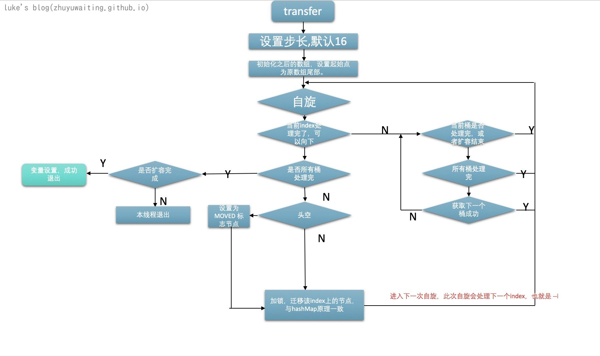
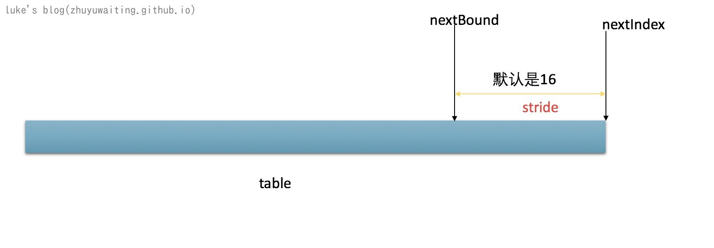

前言
HashMap是最常用的集合类，也是面试中经常被问到的类，HashMap延伸出来的 线程安全的HashMap，ConcurrentHashMap无疑也是极其重要的，ConccurrentHashMap内部数据结构，实现原理等等也无疑是必须要掌握的。
源码分析
数据结构是一切的基础
前面我们说过了HashMap的数据机构，其实ConcurrentHashMap与HashMap的数据结构一致，都是 数组+链表+红黑树的实现

基础属性
View Code
1 | // 最大容量 |
关于 sizeCtl 变量：
-1 :代表table正在初始化,其他线程应该交出CPU时间片
-N: 表示正有N-1个线程执行扩容操作（高 16 位是 length 生成的标识符，低 16 位是扩容的线程数）
大于 0: 如果table已经初始化,代表table容量,默认为table大小的0.75,如果还未初始化,代表需要初始化的大小
核心函数
put
View Code
1 | public V put(K key, V value) { |
initTable 初始化数组
1 | // 初始化数组 |
说明： 由于ConcurrentHashMap是为了多线程设计，初始化也要考虑并发的问题，通过sizeCtl检测，数组table是否在被初始化中，或者在被resize中，如果在，则自旋等待，否则CAS设置sizeCtl表示由我来初始化。
helpTransfer
View Code
1 |
|
说明： resizeStamp()是扩容标志位， 首先需要检测当前状态是否需要帮忙扩容，如果需要，则帮忙扩容，否则不进行扩容
是否帮助扩容检测：
- 如果标志位变了，很可能以为这扩容完成了或者失败等等情况，则不帮忙
- 如果rs+1 = sizeCtl 表示扩容完成，则不需要帮忙了，自旋走put流程就好
- 如果帮忙的线程超过了65535，这都完不成也是没谁了，就别添乱了
- transferIndex下标调整了，表示本次的扩容已经结束，下次的扩容开始了。重新进入判断
transfer
View Code
1 | // 扩容转移 |

说明：
- ConcurrentHashMap的扩容处理会充分利用多线程，如果一个线程put数据的是否，其他线程在扩容，那么put的这个线程也会调用helpTransfer去帮忙扩容
- 扩容的过程是将整个数组分成多个桶，每个线程处理一个桶内的数据，处理完成后获取下一个桶的数据。
- 每个线程循环处理一个桶内所有index的数据，如果tab[index]处的首节点是空，则设置为hash=MOVED的节点，表示这个桶内的节点正在进行扩容处理。如果不为空，对该节点加锁，然后进行节点迁移，此过程与HashMap的节点迁移流程一致。
线程分桶处理：

每个线程领取一个stride去循环处理其中的所有节点数据。
addCount
View Code
1 | /** |
说明： 主要作用是设置计数，以及判断要不要进行扩容
- 随机选一个countCell增加计数。失败则调用fullAddCount
- 通过sizeCtl标志位判断是否在扩容中，如果在扩容中，判断是否需要帮忙，不需要直接退出，需要的话加入扩容大军中进行扩容。无扩容，则自己开先锋进行扩容。
- 计数信息已CounterCell为准 CounterCell无数据 则去baseCount. map.size也是如此调用的sumCount()方法。
get
1 | // 获取key 的值 |
说明：获取key的value的操作相对来说比较简单。
- hash和头结点相同，优先看是不是头结点的值
- 头结点hash<0 表示的是在扩容或者初始化中，则利用头结点的find函数查找，以免并发问题
- 非扩容中，直接在链表后面查找。
注意：此处如果链表过长，在while处的时候，进行了扩容处理，怎么办？：可以查看transfer源码，transfer的时候，其实旧的table没有进行主动的释放，在进行节点迁移的时候，也是深度拷贝，创建的先的链表和节点，所以不会旧的链表还是可以访问。
总结：
ConcurrentHashMap 的设计可以说非常的巧妙，整体思路是减少锁操作，以及并发处理扩容。
减少锁操作：
- 读取的时候，优先判断首节点，在判断是否扩容操作中，如果是，则从首节点的链表往后自旋查找。不在扩容在继续向后，整体无锁。仅仅是在有竞争的时候，进行自旋，这种自旋可以说很快的了
- 写操作的时候如果在resize 则帮忙进行，如果没有resize，则仅仅对头结点table[i]加锁，这样就不会影响其他线程对于table[j]的写入了。
并发扩容：
- 当前线程要进行写操作的时候，如果检测到有其他线程正在进行扩容，则积极加入到扩容大军中，帮助推进扩容的处理。
- 扩容的时候，是将table分成了n个桶 默认是 一个桶包含了16个单元index。 每个线程去申请一个桶的操作权限，申请完成后，循环处理这个桶中的所有节点，对所有节点进行节点迁移处理。处理过的节点设置为hash=MODED。
参考和引申
https://www.cnblogs.com/leesf456/p/5453341.html
https://www.jianshu.com/p/2829fe36a8dd